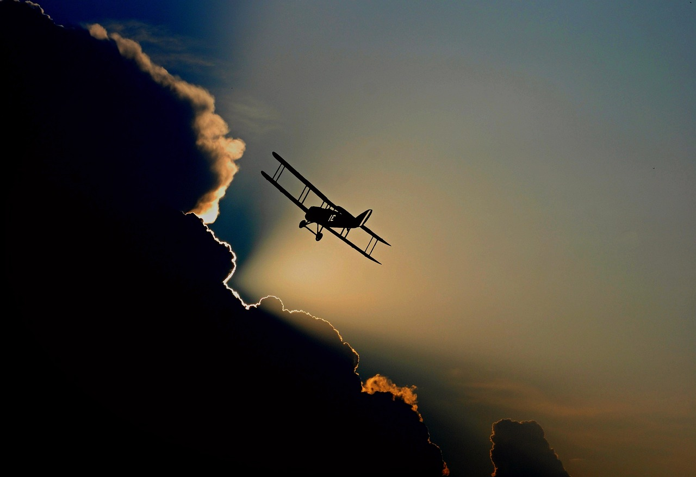
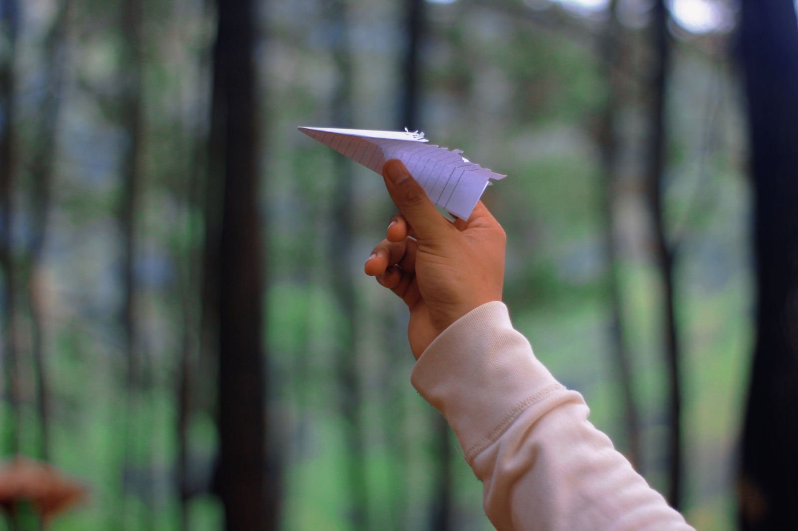

Глава 7
Краткая история полёта
От воздушных змеев и шаров к планёрам, первому самолёту и конкурсам бумажных самолётов.
От змея в Китае до самолёта быстрее звука, шаг за шагом.

7.1 Хронология: до 1903 года
Читайте даты сверху вниз. Каждая — шаг, который кто-то сделал до вас.
- V век до н. э. или позжеВоздушные змеи в Китае. Предание приписывает их мыслителям Мо-цзы и Лу Баню. Самое древнее письменное свидетельство более позднее, около 200 года до н. э.1,2.
- Около 875В Кордове, на территории нынешней Испании, Аббас ибн Фирнас, по преданию, прыгнул с крыльями и тяжело приземлился. Рассказ записали века спустя3.
- Около 1505Леонардо да Винчи заполняет небольшой кодекс заметками о полёте птиц4.
- 21 ноября 1783Пилатр де Розье и маркиз д’Арланд совершают первый свободный полёт людей на шаре братьев Монгольфье над Парижем7,8.
- 1799Джордж Кейли гравирует серебряный диск с неподвижным крылом, корпусом и хвостом — первую современную идею самолёта12.
- 1853Планёр Кейли в натуральную величину переносит человека через долину — первый зафиксированный полёт на планёре с человеком на борту11.
- 1884Под Петербургом паровой моноплан Александра Можайского сходит с наклонного помоста. Спор о том, летал ли он, не утих до сих пор17.
- 1886–1894Бумажные самолёты появляются в печати: в детском журнале в 1886 году и в книге об авиации в 1894 году48.
- 1891–1896Отто Лилиенталь совершает почти 2000 планирующих полётов на 16 конструкциях. Он погибает после падения 9 августа 1896 года15,16.
- 17 декабря 1903Орвилл и Уилбер Райт совершают четыре полёта в Китти-Хок. Первый длится около 12 секунд, последний — 5922.
7.2 Змеи, прыжок, блокнот

Задолго до двигателей люди привязывали крыло к нити, прыгали с крыльями на руках и рисовали машины в блокнотах.
Предание называет Мо-цзы и Лу Баня, V век до н. э., первыми создателями змеев в Китае. Самое древнее письменное свидетельство более позднее: Guinness указывает около 200 года до н. э. Библиотека Конгресса добавляет, что змеи в Океании почти наверняка появились раньше1,2.
Около 875 года в Кордове изобретатель Аббас ибн Фирнас, по преданию, сделал крылья и прыгнул. Он тяжело упал и повредил спину. Позже он сказал, что забыл приделать себе хвост3.
Около 1505 года Леонардо да Винчи написал «Кодекс о полёте птиц». Он рисовал машины с машущими крыльями, но у человека слишком мало мышечной силы, чтобы махать крылом, как птица4.
7.3 Шары над Парижем

В 1783 году первыми полетели баран, утка и петух. Через два месяца за ними последовали люди.
19 сентября 1783 года братья Монгольфье запустили тепловой аэростат у Версальского дворца, перед королём Людовиком XVI. В плетёной корзине летели баран, утка и петух. Примерно через восемь минут они опустились в лесу живыми5,6.
21 ноября 1783 года Жан-Франсуа Пилатр де Розье и Франсуа Лоран д’Арланд совершили первый свободный полёт людей на шаре Монгольфье. Они взлетели от замка Ла-Мюэтт в Париже7. Пробный полёт на привязи с Пилатром де Розье на борту состоялся 15 октября8.
Шар — не крыло. Он плавает в воздухе и летит туда, куда дует ветер. Он не планирует.
7.4 Кейли и Лилиенталь

Прежде чем двигатель смог нести крыло, кто-то должен был понять, что крыло делает.
В 1799 году Джордж Кейли выгравировал серебряный диск. На одной стороне — неподвижное крыло над корпусом в форме лодки, с хвостом. По словам Britannica, это выразило современную идею самолёта: неподвижное крыло и отдельные части для подъёма, тяги и управления12,11.
Его работа завершилась в 1853 году планёром в натуральную величину, который перенёс его кучера, — первым зафиксированным пилотируемым полётом на планёре. По другому источнику, он пролетел около 900 футов над долиной Бромптон-Дейл11,14.
Отто Лилиенталь летал с 1891 года. К 1896 году он совершил почти 2000 полётов на 16 конструкциях планёров15. Он разбился 9 августа 1896 года и умер на следующий день16.
7.5 Можайский и Жуковский
Один построил самолёт с паровыми машинами. Другой карандашом и бумагой объяснил, почему крыло держит.
В 1884 году в Красном Селе под Петербургом Александр Можайский испытал большой моноплан с паровыми машинами. С ровной земли он взлететь не мог, поэтому его пустили с наклонного помоста. По ранним сообщениям, он завалился на крыло и разбился; по более поздним — сначала сделал короткий подскок17.
Николай Жуковский изучал, как течёт воздух. В 1895 году он побывал у Отто Лилиенталя в Берлине и купил один из его планёров. В 1906 году он опубликовал правило для подъёмной силы крыла: она зависит от воздуха, скорости и вихря воздуха вокруг крыла19.
В 1918 году он основал ЦАГИ — Центральный аэрогидродинамический институт — и стал его первым руководителем. ЦАГИ называет его отцом русской авиации20,19.
7.6 Китти-Хок, 1903

Четыре полёта за одно утро, и самый длинный был короче минуты.
17 декабря 1903 года Уилбер и Орвилл Райт совершили первые управляемые полёты аппарата тяжелее воздуха с двигателем в Китти-Хок, Северная Каролина. Первый взлёт состоялся в 10:35 утра22.
Они летали по очереди. Орвилл продержался около 12 секунд и пролетел около 120 футов, 37 м. Уилбер — около 175 футов, затем Орвилл — около 200. Последним Уилбер пролетел 852 фута, около 260 м, за 59 секунд22,23,24.
Они отправили отцу телеграмму. По дороге 59 секунд превратились в 57, а имя Орвилла исказили25. Сначала они строили планёры. Двигатель появился последним.
7.7 Хронология: с 1906 года
После Китти-Хок авиация росла стремительно. Вот следующие сто лет.
- 1906В Москве Николай Жуковский публикует правило для подъёмной силы крыла19.
- 12 ноября 1906В Париже бразилец Альберту Сантус-Дюмон пролетает на своём 14-bis 220 м за 21,5 секунды на глазах у официальных наблюдателей26.
- 13 мая 1913Под Петербургом Игорь Сикорский поднимает в воздух «Гранд» — гиганта с четырьмя моторами30.
- Февраль 1914Следующий гигант Сикорского, «Илья Муромец», поднимает 16 человек и собаку30.
- Январь 1923В Хетафе под Мадридом автожир Хуана де ла Сьервы впервые отрывается от земли под ротором, который вращает ветер. 31 января он пролетает по кругу больше 4 км33,34.
- 14 октября 1947Чак Йегер на Bell X-1 летит быстрее звука42.
- Февраль 1967Конкурс журнала Scientific American получает 10 941 бумажный самолёт из 49 штатов США и ещё 26 стран50.
- 31 декабря 1968Советский Ту-144 становится первым сверхзвуковым пассажирским самолётом, поднявшимся в воздух43.
- 2 марта 1969«Конкорд» впервые взлетает в Тулузе45.
- 2003Последние «Конкорды» уходят на покой45.
- СегодняУ бумажных самолётов есть рекорды дальности и времени в воздухе. Глава 9 их перечисляет.
7.8 Париж, 1906: 14-bis
Бразилец в Париже оторвался от травы, пока судьи держали наготове секундомеры.
12 ноября 1906 года бразилец Альберту Сантус-Дюмон пролетел в Париже на своём 14-bis 220 метров за 21,5 секунды на высоте около 6 метров26.
Полёт видели и измеряли судьи Аэроклуба Франции. Это был первый в Европе полёт длиннее 100 метров29. За несколько недель до этого, в октябре, 14-bis уже подпрыгнул примерно на 60 м28.
Братья Райт летали на три года раньше, на безлюдном пляже, почти без зрителей. Поэтому в Бразилии многие считают первым Сантус-Дюмона. Эта книга признаёт обоих: Райты совершили первые управляемые полёты с двигателем, а Сантус-Дюмон — первый полёт, измеренный судьями в Европе.
7.9 Гиганты Сикорского
В 1913 году в России молодой инженер поднял в воздух самолёт с четырьмя моторами и кабиной.
13 мая 1913 года, в десять часов вечера, Игорь Сикорский поднял «Гранд» с аэродрома в Петербурге. У него было четыре мотора по 100 лошадиных сил и крылья размахом 28 м. Он набрал около 120 м, развернулся, поднялся ещё примерно на 75 м и развернулся снова. Полёт длился 10 минут30.
В августе 1913 года «Гранд» продержал в воздухе восемь человек целый час. Следующий гигант Сикорского, «Илья Муромец», был ещё больше. В феврале 1914 года он поднял 16 человек и собаку30.
Летом 1914 года Сикорский с экипажем пролетел на «Илье Муромце» из Петербурга в Киев и обратно, около 2600 км, и по пути потушил пожар мотора30.
7.10 Хетафе, 1923: автожир
Инженер из Мурсии хотел летательный аппарат, который не падает с неба. Его ответом стал ротор, который вращается сам.
В 1919 году Хуан де ла Сьерва из испанской Мурсии увидел, как его большой биплан разбился во втором полёте. Он решил создать более безопасный аппарат32.
У его автожира наверху ротор, который не крутит никакой двигатель. Когда машина движется, воздух проходит снизу сквозь лопасти и вращает их, как падающее крылатое семечко клёна. Если двигатель остановится, ротор продолжит вращаться, и машина мягко опустится32.
В январе 1923 года в Хетафе под Мадридом его C-4 впервые оторвался от земли. 31 января он пролетел по замкнутому кругу больше 4 км за три с половиной минуты на высоте около 25 м. Главным был шарнир у корня каждой лопасти, чтобы она могла взмахивать вверх и вниз32,33.
7.11 Женщины, которые летали
В 1910 году француженка получила первое пилотское свидетельство, выданное женщине. Вскоре за ней последовали другие — от России до Испании и США.
8 марта 1910 года француженка Раймонда де Ларош стала первой в мире женщиной с пилотским свидетельством35. В августе 1911 года под Петербургом Лидия Зверева получила диплом пилота-авиатора № 31 — первый, выданный женщине в Российской империи36.
Американке Бесси Коулман издатель газеты посоветовал учиться летать во Франции, где к чернокожим относились с большим уважением. Она поехала туда и 15 июня 1921 года получила свидетельство — первое у афроамериканки37,38.
15 сентября 1928 года в Хетафе под Мадридом Мария Бернальдо де Кирос стала первой испанкой с пилотским свидетельством39. 20–21 мая 1932 года Амелия Эрхарт в одиночку и без посадок пересекла Атлантику — от Ньюфаундленда до фермерского поля в Северной Ирландии — примерно за 15 часов. До неё этого не делала ни одна женщина41.
7.12 Быстрее звука

В 1947 году маленький оранжевый ракетоплан полетел быстрее звука.
14 октября 1947 года Чак Йегер пролетел на Bell X-1 со скоростью 1,06 Маха, около 1127 км/ч, на высоте около 13 000 м. Бомбардировщик B-29 поднял его примерно на 7000 м и сбросил, после чего включился ракетный двигатель. Форма X-1 повторяла пулю пулемёта42.
Затем пришла очередь пассажирских самолётов. Советский Ту-144 взлетел первым, 31 декабря 1968 года, примерно за два месяца до первого полёта англо-французского «Конкорда» 2 марта 1969 года43,45.
«Конкорд» летал примерно на двух скоростях звука, на высоте 17–18 км, откуда пассажиры видели изгиб Земли. Он пересекал Атлантику меньше чем за четыре часа45.
7.13 Бумажный самолёт

Бумага пришла из Китая, складывание стало искусством в Японии, а дети складывали дротики задолго до того, как о них написали.
Придворные хроники приписывают Цай Луню то, что в 105 году он представил китайскому императору способ делать бумагу, хотя более древние обрывки говорят, что бумага появилась лет на 200 раньше46. В Японии складывание стало искусством: книга, напечатанная в Киото в 1797 году, учит складывать сцепленных бумажных журавликов47.
Следы бумажных самолётов найти труднее. Проект по истории складывания называет бумажный аэроплан в детском журнале St Nicholas в 1886 году и бумажные дротики в книге Октава Шанюта о летательных машинах 1894 года48.
В феврале 1967 года журнал Scientific American провёл конкурс: 10 941 работа из 49 штатов США и ещё 26 стран. Летающее крыло из папиросной бумаги Фредерика Хувена продержалось 10,2 секунды; самолёт Роберта Мейзера пролетел 89 футов, около 27 м50,51.